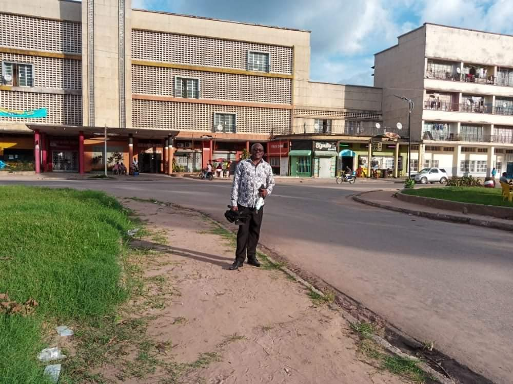

À propos de Kananga
Kananga est la capitale de la province du Kasaï Central en République Démocratique du Congo. C’est une ville riche en histoire, culture et diversité, jouant un rôle majeur dans l’économie et le développement régional.

Histoire
La ville a connu une évolution marquante depuis l’époque coloniale, devenant un centre administratif et un carrefour commercial important.

Culture
Kananga est reconnue pour sa richesse culturelle : danses traditionnelles, artisanat local, et coutumes transmises de génération en génération.

Population
La ville compte plusieurs centaines de milliers d’habitants, avec une population jeune et dynamique contribuant au développement socio-économique.